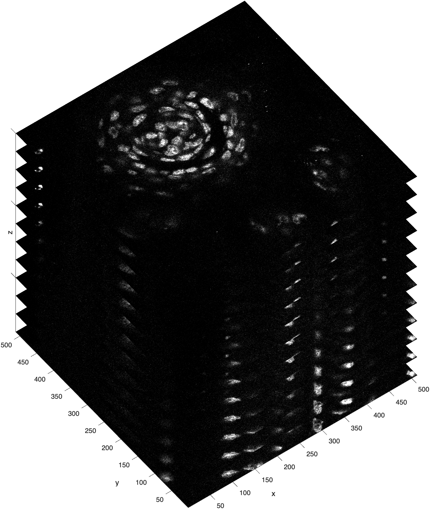
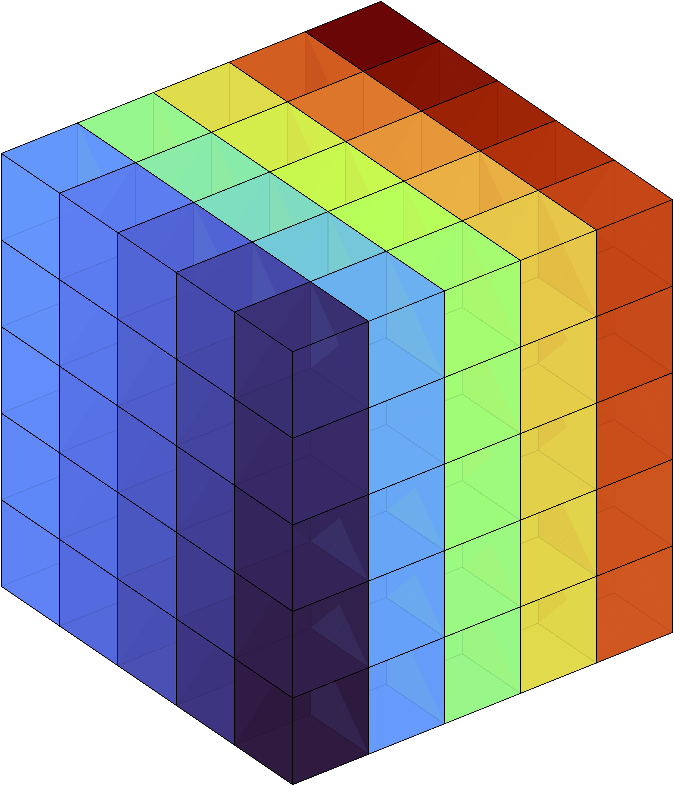
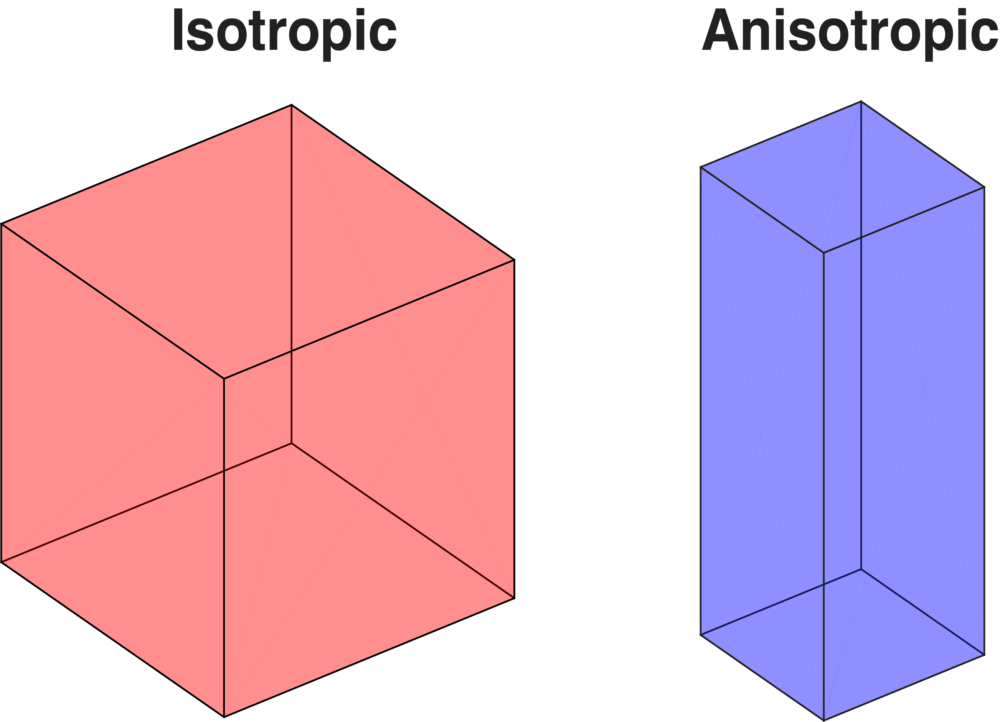
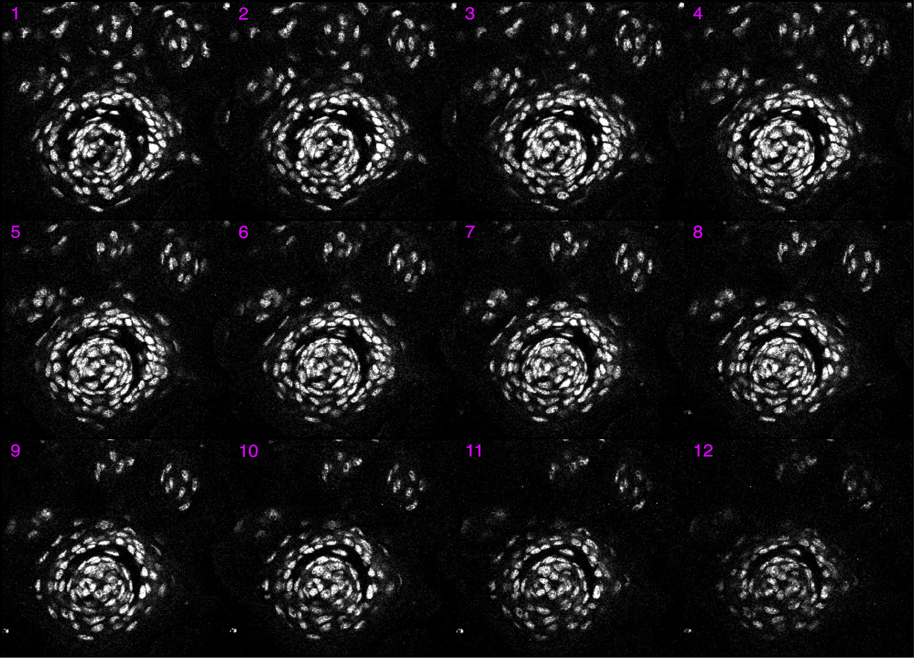
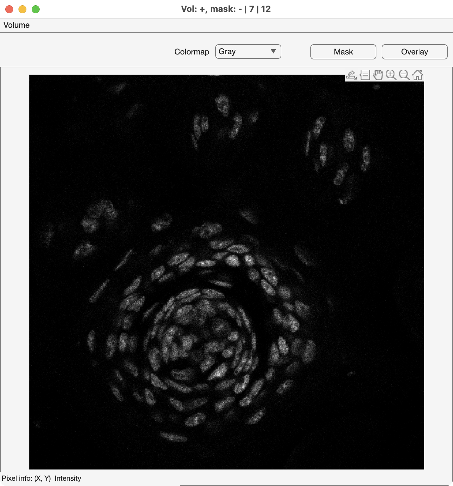
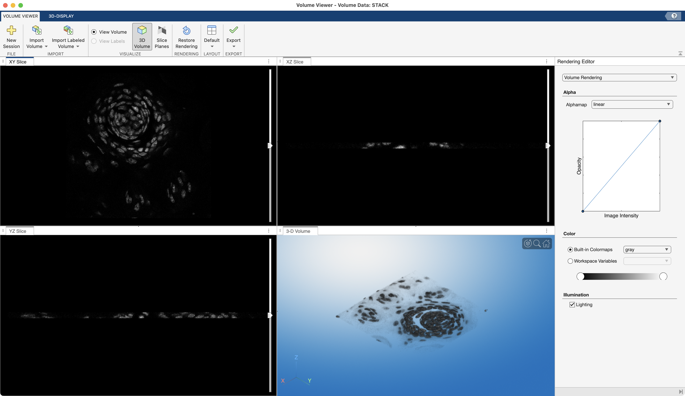

Image Stacks
An image stack is exactly what it sounds like: a stack of images. Think sheaf of paper or deck of cards .
Image stacks have three (or more) dimensions. In a stack, images are typically stored in the xy-plane and then stacked along the z-dimension. In this configuration, the z-dimension usually represents either time or distance. If time, then the image stack is a movie strip. If distance, then the image stack represents the volume of something, like the volume of a tissue section.
For example, the following is a visualization of a taste bud from a mouse, cross-sectioned into very thin slices.

This image stack was created by a confocal microscope, which captured each image by raster-scanning in the xy-plane, adjusting the focal plane along the z-axis, and then raster-scanning the next image. Because depth is captured by adjusting the focal plane, each image in this stack is also called an optical slice. As you can see, there are 12 optical slices in this confocal stack. Each optical slice has 512 rows and 512 columns (height and width). Note, in this visualization, the slices along the z-dimension are artificially separated to clearly show all 12 slices.
Loading 3D Image Stacks
To load an image stack saved in the .TIF file format, you first need information about that stack.
The function imfinfo returns the metadata for an image stack.
| Load the metadata | |
|---|---|
meta =
12×1 struct array with fields:
Filename
FileModDate
FileSize
Format
FormatVersion
Width
Height
⋮
…For this file, we get a lot of metadata (more than 39 fields). Notice that meta is a 12X1 structure, so in fact, you get a metadata structure element for each slice in the image stack. This is one way to determine the number of slices in the image stack. Most of the data is repeated for each slice, so we can examine the metadata for the first image slice to get information about the image slices:
numel(meta) % number of slices
ans =
12
meta(1).Width % number of columns
ans =
512
meta(1).Height % number of rows
ans =
512
meta(1).BitDepth % bit depth
ans =
8
…Here we review the first element in the metadata structure and we find that each slice in the image stack is an unsigned 8-bit image with 512 rows (Height) and 512 columns (Width). So, the size of our image stack is 512 X 512 X 12.
The function imread can read slices from a .TIF image stack. To read in a slice, you call imread as you would for a 2D image. The following code loads the first slice from a 3D Image stack, like the one shown above.
| Read a single slice using imread | |
|---|---|
If you want to load a different slice, you indicate the slice number as a second input in imread
| Indicate which slice to read using imread | |
|---|---|
If you want to load the whole stack using imread, you need a FOR LOOP.
…When loading large datasets, it is always a good idea to preallocate the variable prior to running the FOR LOOP. Notice how we match the bit depth of the preallocated variable to the bit depth of the image stack. Failure to do so results in bit depth mismatching and much gnashing of teeth.
Reviewing the image stack in the workspace shows the following:
…The image stack is loaded into MATLAB just like any other numeric array.
Volume and Voxels

An image stack can also be visualized as a Rubik's cube or a cube of smaller cubes. In this visualization, each small cube is called a voxel, the 3D version of a pixel. Like pixels, voxels are point samples and have dimensionality.
Isotropic vs Anisotropic
When the length, width, and height of the sides of a voxel are identical, the voxel is isotropic; when they are not, the voxel is anisotropic.
In the taste bud image stack, the voxel dimensions are 0.3 x 0.3 x 0.75 µm. So, the voxels in this image stack are not perfect little cubes (aka isotropic), but are instead cuboidal (aka anisotropic).

The sides of the isotropic voxel are equal along all dimensions, while the sides of anisotropic voxel are equal along the x & y dimensions, and different along the z-dimension.
Calculating Volume
To calculate the volume of an image stack, you first calculate the volume of a single voxel and then add up the volumes of all the voxels in the stack.
You can get the size of a voxel by referencing the metadata. In our STACK example of a taste bud, the pixel dimensions are 0.3 X 0.3 in the xy plane and 0.75 in the z-plane. So to calculate the volume of a single voxel, you multiply the lengths of the sides of the voxel:
The volume of this voxel is very small—smaller than an E.coli bacterium!
To get the volume of the entire image stack, you multiply the volume of a voxel by the total number of voxels in the stack:
…which converts to
So the total volume of the image stack is 212,336.64 \(µm^3\) — still very small!
Viewing Image Stack Slices
To view the slices in an image stack, you need a special viewer—imshow won't work.
Montage
A simple way to see all the slices is to use the function montage which reformats all the slices into a 2D matrix of images.
| View slices as a montage | |
|---|---|

A
4X3montage of all the slices from the image stack. The number of each slice has been added to the top left corner of each cross-section for clarity.
Course Function - mmSliceView
The course function mmSliceView is a custom MATLAB function designed to display slices from an image stack interactively. You can find more details about its usage and features in the documentation.
| mmSliceView | |
|---|---|

…You can quickly scrub through the slices using the mouse scroll wheel.
volumeViewer
The MATLAB app volumeViewer shows orthogonal cross-sections of an image stack and can Volume Render.
| Volume Viewer | |
|---|---|

Screen grab of Volume Viewer showing
STACK. Notice that the orthogonal slices are not very thick — this is a very short stack (only 12 cross-sections vs 512 rows and columns).